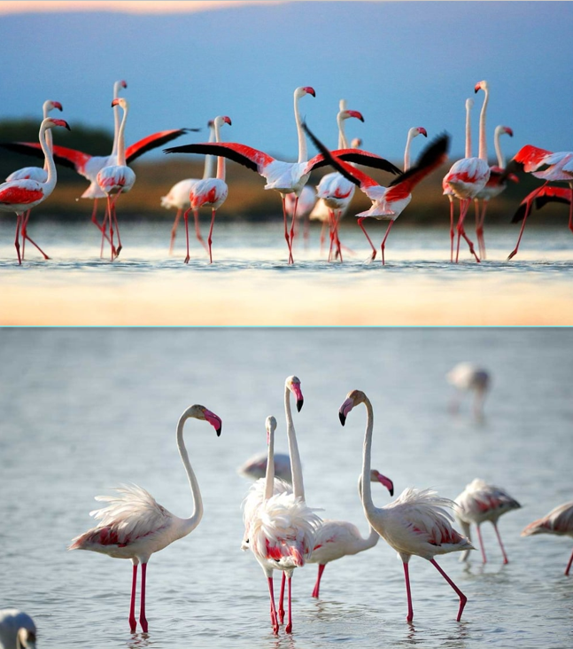
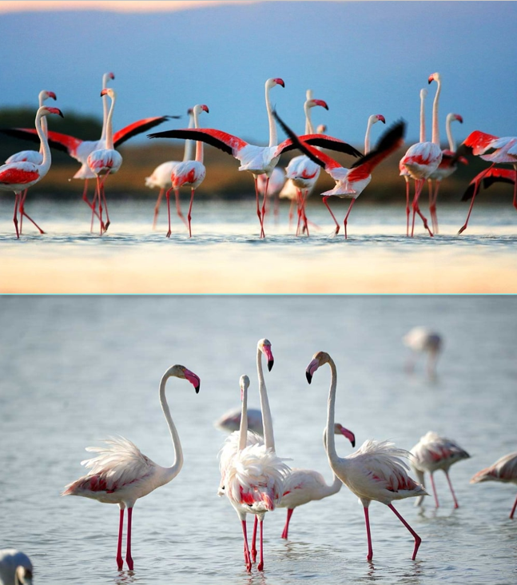

About
Passionate and knowledgeable tour guide with 10+ years of experience delivering immersive, engaging, and informative tours.
Expert in local history, cultural, and storytelling, focusing on creating unique, unforgettable experiences for diverse groups.
Adept at tailoring narratives, managing, logistics, and ensuring safety while providing exceptional, friendly service.
Itinerary
Fullday Tour
A full-day guided tour of Jaffna offers a deep dive into the unique Tamil culture, Dutch colonial history, and spiritual sites of Sri Lanka's northern capital. Highlights typically include the stunning Nallur Kandaswamy Kovil, historic Jaffna Fort, Nilavarai Bottomless Well, and the northernmost point of Point Pedro.
Halfday Tour
A half-day tour of Jaffna offers a captivating, condensed glimpse into the region's unique Tamil heritage, war-torn history, and vibrant culture. Key highlights usually include exploring the historic Dutch Fort, visiting the iconic Nallur Kandaswamy Kovil, exploring the bustling Jaffna Market, and visiting the renovated Public Library, often featuring a traditional Tamil snack.
Cultural Tour
A cultural tour of Jaffna offers an immersive journey into the heart of Northern Sri Lanka’s unique Tamil heritage, typically covering historic temples, colonial ruins, and vibrant markets over 4 hours or more.
Delft Island Tour
A Delft Island tour from Jaffna is a day trip to a remote, flat coral island in the Palk Strait, renowned for its wild horses, colonial ruins, and unique coral-walled landscapes. Accessible by ferry from Kurikkaduwan Jetty, highlights include the Baobab tree, Dutch Fort, Pigeon Nest, and white sandy beaches.
Tuk Tuk Tour
A tuk-tuk tour in Jaffna offers an intimate, open-air exploration of Sri Lanka’s unique northern capital, blending deep Tamil culture, colonial history, and vibrant local life. These guided, 2–3 hour, or full-day excursions typically cover iconic spots like the Nallur Kandaswamy Temple, Jaffna Fort, and the restored Public Library.
Cooking Demo
A Jaffna village cooking demonstration offers an intimate, hands-on immersion into the unique culinary traditions of Northern Sri Lanka, often held in a local home within the suburbs of Jaffna. These experiences typically last 2–3 hours and focus on creating authentic, fiery, and coconut-rich dishes using traditional, age-old techniques.
Toddy Tapping
Jaffna toddy tapping is a dangerous, traditional, and highly skilled art where toddy tappers ("paneriver") climb tall Palmyra palms, often scaling 60–80 feet, to collect sap for producing toddy, a popular local alcoholic beverage. Tappers walk across tightropes between trees to harvest the sugary, fermented sap, which is then served in coconut shells.
Galleries

 

Contact
+94 770 083 724
yarlexcursion@gmail.com
Tellippalai West, Tellippalai